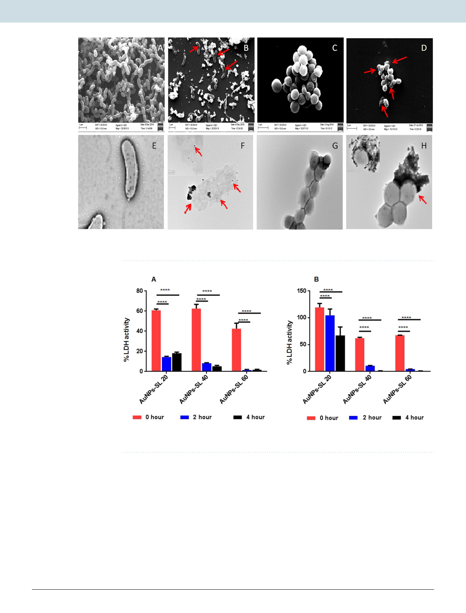

www.nature.com/scientificreports/
www.nature.com/scientificreports
Figure 6. Untreated cells of V. cholerae (A,E) S. aureus (C,G) whereas AuNPs-SL treated cells V. cholerae (B,F)
and S. aureus (D,H) by SEM (upper panel) and TEM (lower panel).
Figure 7. LDH activity of S. aureus (A) and V. cholerae (B). Average of triplicates was plotted with SD and data
was analyzed using Two-way ANOVA (GraphPad Prism 6.0). *P value < 0.01.
polymyxin) was found against S. aureus, whereas with Amp it has shown additive effect. In the case of V. cholerae,
AuNPs-SL has shown synergy with polymyxin, partial synergy with kanamycin and indifferent with ampicillin.
The synergistic activities of AuNPs-SL in the presence of conventional antibiotics suggest that it might be possible
to reduce the viability of bacterial strains at lower antibiotic concentrations. Most studies have been done on silver
nanoparticles and similar types of interaction have also been reported by others39. This study demonstrates the
synergistic effect of antibiotics and nanoparticles in improving their bactericidal property; it was suggested that
nanoparticles can be effectively used in combination with antibiotics in order to improve their efficacy against
various pathogenic microbes.
Discussion
Synthesis of nanoparticles using chemical and physical methods is potentially unfriendly to the human health
and environment. Here, sophorolipid; a glycolipid was used to greener synthesis of gold nanoparticles. Glycolipid
mediated metal nanoparticles (silver nanoparticles) synthesis was first reported by Singh et al., (2009) and
they have shown its antimicrobial activity40. Although silver nanoparticles and silver itself are well reported for
Scientific Reports | (2020) 10:1463 | https://doi.org/10.1038/s41598-019-57399-3
7